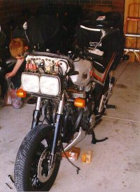
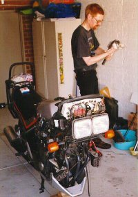
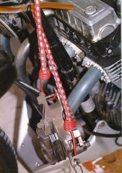
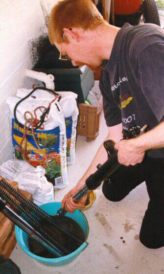
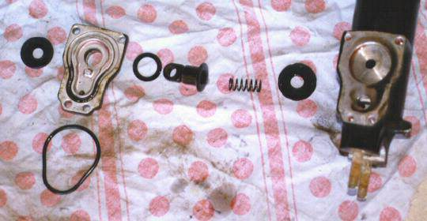
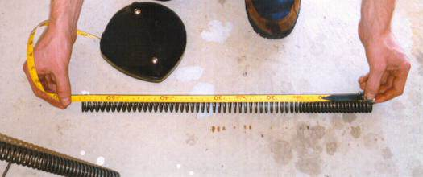
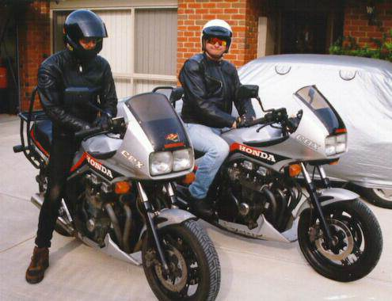

The RC17 workshop manual recommends that you change your fork oil every year.
But seriously, how many of us actually do that? Not me, that’s for certain! However, this year I decided that 4 years between changes was just a bit too long.
I also persuaded Mr_T to get his done as well. All I had to say was “Bring your bike over here and I’ll change your fork oil for you.” (Yeah, so I’m a sucker for punishment.)

Anyway, enough of the banter, and on to the first Team RC17 step by step maintenance project!
Equipment required:
- 5mm, 6mm, 8mm Allen keys
- Phillips & Flat-blade screwdrivers
- 8mm, 10mm, 14mm, 27mm sockets or spanners
- 15/16 inch socket or spanner
- Torque spanner / socket driver
- 1 litre of Automatic Transmission Fluid (ATF)
Step 1: Removing the forks

Before we can remove the forks, we have to remove a few other parts; namely the fairing and the front wheel. (Refer to pages 13-3 and 13-11 of the workshop manual for further details.) You may also want to remove the lower fairing to allow easy access for propping the bike up.To prevent damage to the brake lines, suspend the brake calipers from the fairing sub-frame. We used a couple of occy-straps. (They may be called something like ‘bungee’ straps in other parts of the world.)

Remove the handlebars by removing the retainer rings and loosening the pinch bolts.
Remove the front fender (mudguard), then remove the fork brace.
Remove the plastic covers over the fork damping control and air-valve (on the top of the forks). Loosen but do not remove the large nuts on top of the forks. (Use the 27mm socket for the left fork, and the 15/16 inch for the right, taking care not to damage the damping adjuster ‘wheel’ thing.)
(You’ll save yourself a lot of stress if you do the above step – trying to hold fork tubes by hand and loosen the tube cap bolt is almost impossible!)
Loosen the fork top and bottom pinch bolts. Pull the fork tube down. Using a large screwdriver to spread the triple clamps will make removing the forks easier.
Note: Because of the friction caused by the air joint O-ring, you’ll have to turn the tube while pulling down.
If the forks haven’t been removed for a long time, you may need to use a hammer and block of wood to gently tap the fork downwards.
Once the top of the fork leg has passed through the upper triple clamp, remove the fork stop ring. Pull the fork tube out of the top and bottom bridges.
Step 2: Disassembly
Firmly hold the fork leg, and remove the tube cap. Be careful to apply downwards pressure to stop the spring jumping out of the fork tube. (The spring is strong enough to propel the cap across the workshop if you’re not careful. I found out the hard way! It also hurts when the cap hits you in the face on the way through.)
Caution: Do not damage the sliding surface of the fork tube.
Remove the spacer, spring rest and fork spring. Drain the oil into a suitable drain pan. Pump the fork up and down several times to drain the oil.

Pump the fork to remove all of the oil
In the above photo, note the colour of the old fluid. New ATF fluid is a clear, bright red colour.
Leave the fork to drain, and remove the other fork. Leave both fork legs to drain for a couple of hours. Flush them with a small quantity of fork oil (100mls is enough) by pumping them and leave to drain for a while longer.
The old oil was an unpleasant grey / black colour. In Mr_T’s case, it also contained a noticable amount of sediment.
Step 3: Checking the anti-dive mechanism
Remove the four socket bolts and remove the anti-dive case from the left fork slider.
Remove the pivot collar and disassemble the anti-dive. Check each part for wear or damage.
Remove the socket bolt and remove the anti-dive adjuster knob. Remove the socket bolt and remove the valve spring and check ball. Remove the orifice from the fork slider.

The anti-dive pieces spread out before cleaning.
The ‘interesting’ coloured cloth background was a bed sheet given to Mr_T, and was rapidly transformed into rags. The thought of waking up next to that after a night out on the booze is terrifying. The anti-dive components all spread out before cleaning
Check the orifice for clogging by applying compressed air. Also check the orifice for damage. check the valve spring and check ball for wear or damage.
Install the orifice into the left fork slider. Install the check ball and valve spring, and tighten the socket bolt. Install the adjuster knob and secure it with the socket bolt. Assemble the anti-dive case.
Note:
- Apply a locking agent to the socket bolt threads before assembly.
- Apply ATF to the piston and piston O-rings.
Install the anti-dive case onto the left fork slider and tighten the socket bolts to between 4 and 7 ft-lb of torque.
Step 4: Check the fork spring free length
Measure the fork spring free length. The minimum service limit is 543mm (21.4 inches). If either spring is shorter than this, replace them both.
Both Mr_T’s and my springs were spot-on the original length of 554mm. (And this was after 14 years of reasonably hard riding!)

Measuring the fork spring free length
Step 5: Reassemble the forks
Because of the way Honda designed the RC17’s fork system, the two forks have different amounts of oil in them.
The right fork has 375cc (13.2oz) of oil, whilst the left has 400cc (14.1oz).
Install the fork spring, spring seat and spacer in the fork tube.
Note: Note the spring direction; the closely wound coils must be at the bottom.
Hold the fork tube securely, and install and tighten the fork tube cap to between 11 and 22 ft-lb.
I found it easiest to place a socket over the fork tube cap and push vertically downwards. You’ll need to compress the fork spring about 25mm (1 inch) before the threads in the fork tube cap meet the thread inside the fork tube. Once you have the spring compressed, merely turn the fork tube to engage the threads. Be careful not to get it cross-threaded!!
Note: On the right fork, align the cavity on the damping adjuster rod with the flat side in the piston.
Step 6: Re-installing the forks
Before re-installing the forks, ensure that the inner surfaces of the triple clamps are clean and free of any dirt or rust.
Push the fork upwards through the bottom triple clamp, and install the fork stop ring in the groove in the fork tube. Push the fork upwards until the stop ring contacts the air joint.
You may need to twist the fork as you push it upwards through the air joint – the O-rings are very tight.
A good point to remember is to align the right fork so that the damping adjuster knob’s selected setting points forwards. You can check this by installing the black plastic knob onto the fork before tightening the top and bottom pinch bolts.
Tighten the bottom pinch bolt to between 33 and 40 lb-ft of torque, and the top pinch bolt to between 7 and 11 ft-lb.
Loosely install the fork brace. Install the removed parts in the reverse order of removal.
- front fender (mudguard)
- handlebars
- front wheel
- fairing
With the front brake applied, pump the forks up and down several times. Tighten the front fork brace mounting bolts to between 7 and 11 ft-lb.
Step 7: Setting up the suspension
Fill the fork tubes with air, up to the maximum recommended pressure of 6 psi.
Caution:
- Use only a hand-operated air pump to fill the fork tubes. Do not use compressed air.
- Maximum pressure is 43 psi. Do not exceed this or fork tube component damage may occur.
With the front brake applied, pump the forks up and down several times. Place the motorcycle on it’s centre stand. Check the air pressure and adjust if necessary.
I (Viking) have found that a standard bicycle pump gives about 1psi per pump, and that putting 10 pumps into the forks gives good handling. (The 10 pumps includes the pressure lost when you remove the air hose from the air inlet.) Mr_T, on the other hand, finds that having 0psi pressure suits his riding style.
Step 8: Ride!
Get your riding gear on, and go for a test ride to see what effect the oil change has had on your bike’s handling. I noticed a definite improvement.

The dastardly duo, ready for a test ride.